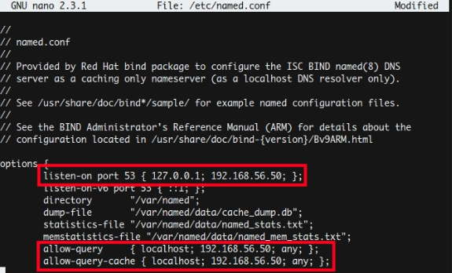
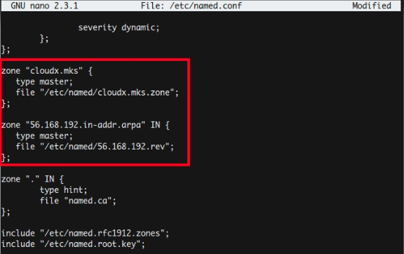

Install DNS Server
[root@localhost ~]# yum install bind bind-utils -y[root@localhost ~]# nano /etc/named.conf
Ubah atau tambahkan baris kode
listen-on port 53 { 127.0.0.1; 192.168.56.50; };
allow-query { localhost; 192.168.56.50; any; };
allow-query-cache { localhost; 192.168.56.50; any; };
Hasilnya akan seperti ini

Kemudian tambahkan zone (nama domain) dan reverse (alamat IP).
zone "cloudx.mks" {
type master;
file "/etc/named/cloudx.mks.zone";
};
zone "56.168.192.in-addr.arpa" IN {
type master;
file "/etc/named/56.168.192.rev";
};
Hasilnya seperti ini

[root@localhost ~]# nano /etc/named/cloudx.mks.zone
$TTL 86400
@ IN SOA cloudx.mks. root.cloudx.mks. (
2018092501 ;Serial
3600 ;Refresh
1800 ;Retry
604800 ;Expire
86400 ;Minimum TTL
)
@ IN NS ns1.cloudx.mks.
@ IN NS ns2.cloudx.mks.
@ IN A 192.168.56.50
ns1 IN A 192.168.56.50
ns2 IN A 192.168.56.50
www IN CNAME cloudx.mks.
blog IN & A 192.168.56.50
[root@localhost ~]# nano /etc/named/56.168.192.rev
Tambahkan pada baris paling bawah
$TTL 86400
@ IN SOA cloudx.mks. root.cloudx.mks. (
2018092501 ;Serial
3600 ;Refresh
1800 ;Retry
604800 ;Expire
86400 ;Minimum TTL
)
IN NS ns1.cloudx.mks.
IN NS ns2.cloudx.mks.
@ IN A 192.168.56.50
ns1 IN A 192.168.56.50
ns2 IN A 192.168.56.50
50 IN PTR cloudx.mks.
50 IN PTR blog.cloudx.mks.
[root@localhost ~]# systemctl enable named
[root@localhost ~]# systemctl restart named
[root@localhost ~]# nano /etc/resolv.conf
search cloudx.mks
nameserver 192.168.56.50
Install Web Server
[root@localhost ~]# yum install httpd -y[root@localhost ~]# systemctl enable httpd
[root@localhost ~]# systemctl start httpd
Konfigurasi Firewall
[root@localhost ~]# firewall-cmd --add-service=dns --permanent[root@localhost ~]# firewall-cmd --add-service=http --permanent
[root@localhost ~]# firewall-cmd --reload
Pengujian
[root@localhost ~]# nslookup cloudx.mksHasilnya
Server: 192.168.56.50
Address: 192.168.56.50#53
Name: cloudx.mks
Address: 192.168.56.50
Kita juga bisa mengujinya dengan cara membuka browser dan mengetikan
DNS yang sudah kita buat (pastikan IP centOS dan PC sudah 1 network)